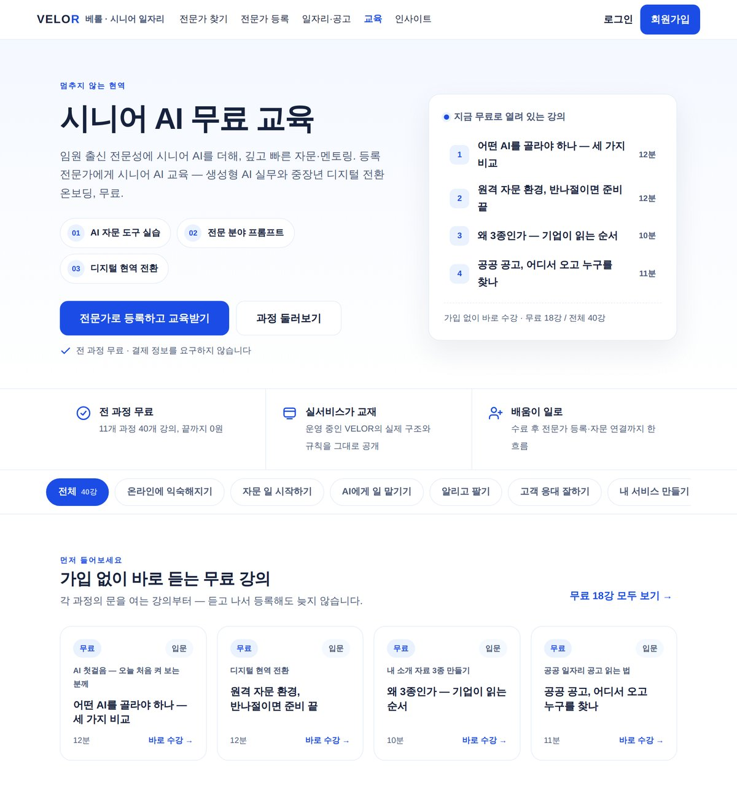
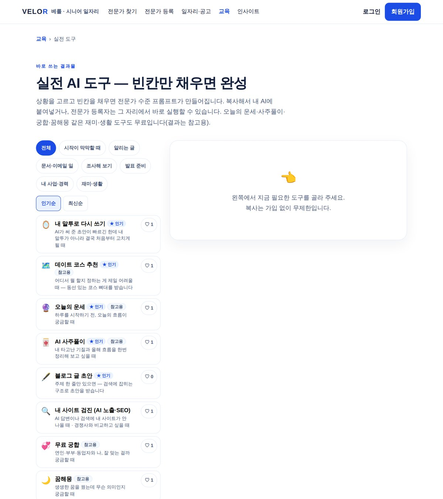

기획서 대신 서비스를 만들었습니다. 무료 강의 40강, 실전 도구 31종, 자동 제작 영상 13편. 전부 velor.kr에서 지금 열어 확인하실 수 있습니다.
수치는 2026년 8월 기준 DB 실측값입니다. 강의·도구는 계속 늘어나는 값이라 기준 시점을 밝힙니다.
전문가 매칭 서비스의 초기 난제는 공급도 수요도 없는 상태에서 사람이 먼저 찾아올 이유를 만드는 것입니다. 광고비를 태우는 대신 "무료로 배우고 바로 써 보는 공간"을 만들어 유입을 만들고, 그 안에서 전문가 등록으로 이어지도록 설계했습니다. 아래는 그 설계를 3주 동안 실제 운영 단계까지 올린 기록입니다. VELOR의 AI 기능은 AI 기반 전문가 매칭 인텔리전스 — 경력을 "해결 가능한 문제"로 바꿔 수요와 잇는 것 — 를 향해 있습니다.
| 과정 | 11개 과정 · 40강 (전부 무료) |
|---|---|
| 난이도 구성 | 입문 5 · 중급 4 · 고급 2 |
| AI 사용 안내 | 3종(ChatGPT · Gemini · Claude) × 100항목 = 300항목 |
| 특징 | 강사가 사람이 아니라 이 서비스를 실제로 만들고 운영하는 AI 에이전트 6인 |
강의 본문은 각 사 공식 문서(Anthropic 고객지원 · Google Gemini 고객센터 · OpenAI 도움말)를 근거로 작성했고, 출처는 공식·공인 기관만 표기하는 규칙을 세워 전수 적용했습니다.

| 도구 | 31종 (전부 무료) |
|---|---|
| 구성 | 빈칸 2~3개만 채우면 전문가 수준 지시문이 자동 생성 |
| 실행 경로 | 프롬프트 복사(무제한) + 회원 즉시 실행(하루 5회) 이중 경로 |
| 연결 | 31종 전부 다음 도구 자동 추천 — 결과물이 다음 도구에 자동 주입 |
| 안전장치 | 수치·상호 생성 금지, 확인 필요 항목 표시, 지도 검색 링크로 환각 차단 |
설계 원칙은 하나입니다 — 사용자에게 "좋은 프롬프트를 쓰라"고 요구하지 않는다. 무료 LLM 3단 폴백(Gemini → Groq → OpenRouter)으로 유료 비용 0을 유지하면서 실행 실패를 줄였습니다.

| 에피소드 | 13편 제작 · 전편 공개 |
|---|---|
| 파이프라인 | 대본 → 자막 → 렌더 → 발행 → 지표 수집까지 자동화 |
| 품질 가드 | 무음 영상 발행 차단(오디오 검증 통과 전 발행 불가) · 사실검증 항목 관리 |
| 운영 | 매일 정해진 시각 자동 발행 · 지표 수집 |
사람이 하는 일은 목소리 녹음과 최종 확인뿐이고 나머지는 에이전트가 처리합니다. 영상은 해당 주제의 강의 페이지에 연결돼 사이트와 채널이 서로를 밀어줍니다.
AI 에이전트를 역할별로 나눠 운용했습니다. 운영 총괄 에이전트가 데이터베이스·콘텐츠·검증을, 화면 담당 에이전트가 코드와 배포를 맡고, 사람은 되돌릴 수 없는 결정(투자·법률·비용·삭제)만 승인합니다. 두 에이전트는 공유 작업 원장에 기록을 남겨 충돌을 막습니다.
이 운영 방식 자체가 교육 과정의 콘텐츠가 됐습니다 — 에이전트가 자기 운영 노하우를 강의합니다.
llms.txt 게시,
주요 AI 크롤러(GPTBot · ClaudeBot · PerplexityBot 등) 접근 허용을 사이트에 적용했습니다.